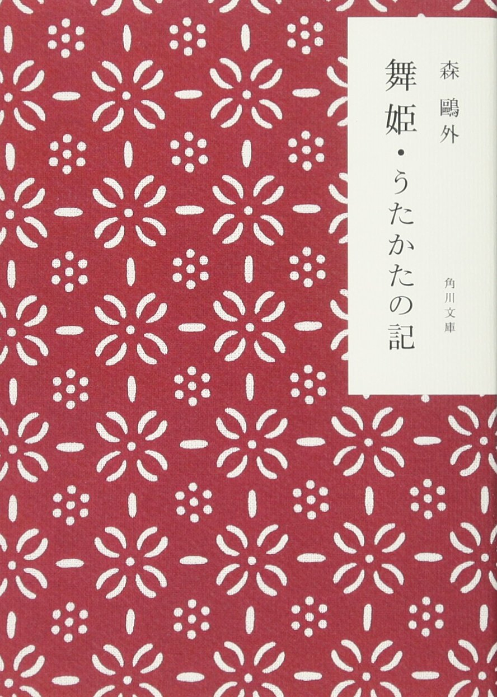
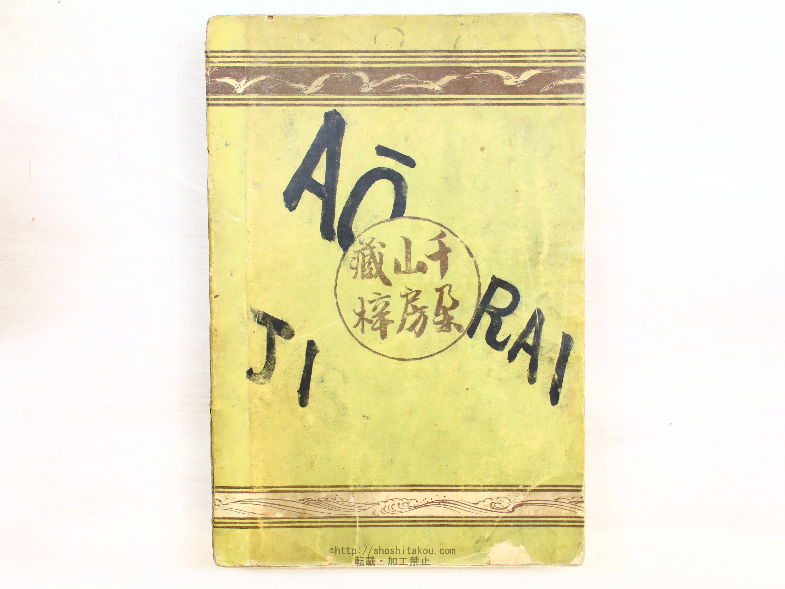
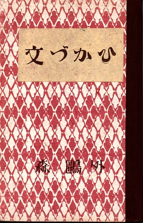

"Vita Sexualis" by Ogai Mori is a significant work in Japanese literature, published in 1909 during a transformative
period in Japan's cultural history.The novel revolves around the life of its protagonist, Shingo, and his journey of
self-discovery in the realm of sexuality. Mori delves into the complexities of human relationships, exploring themes
of love, desire, and societal expectations prevalent in early 20th-century Japan. Shingo's experiences serve as a lens
through which Mori examines the psychological and philosophical dimensions of intimate connections, challenging
established norms and moral values. The novel not only portrays an individual's sexual awakening but also provides a
broader commentary on the societal shifts and intellectual discourse of the time. Mori's exploration of these themes,
coupled with his intricate narrative style, has cemented "Vita Sexualis" as a classic in Japanese literature, offering
readers a profound and thought-provoking reflection on the human condition.
"The Romantic There"(ドイツ三部作)

The Dancing Girl
"The Dancing Girl" (舞姫, Maihime) was the first published short story by the Japanese writer Mori Ōgai.
The story first appeared in Kokumin no Tomo (People's Friend, 国民之友) in 1890, and is based on Mori's
own experiences as a medical student in Germany. In some ways, this tale foreshadows Puccini's Madama
Butterfly, which deals with a similar theme but with a slight role reversal: in Madama Butterfly, a
Western man abandons a Japanese woman, while in The Dancing Girl a Japanese man leaves a Western woman.
The short story was adapted into an episode of Animated Classics of Japanese Literature, which was released
in North America by Central Park Media. It was also adapted into an OVA (Original Video Animation) by Toei
Animation in 2006.
Minawa Shu

Minawa Shu
"Suimatsu (Minawa) Shū," 130 years ago in 1892 (Meiji 25), when he was 30 years old. This large volume, compiled
by Ōgai himself, contains over 600 pages and includes his novel trilogy "Maihime" (Dancing Girl), "Utakata no Ki"
(Memories of a Utakata), and "Bunzukahi," as well as 14 translated novels, 2 translated plays, and a collection of
translated poems titled "Omokage," which he co-translated with friends. It can be said that this comprehensive
collection represents Ōgai's poetic ideas and literary ambitions of his twenties. The "Suimatsu Shū" was not only
a special volume for Ōgai but also a book that was read and cherished for a long time. Over the years, the "Suimatsu
Shū" underwent several editions and abridged versions were published until Ōgai's death at the age of 60. With each
edition, Ōgai meticulously revised the content, wrote new prefaces and Chinese poems, and made corrections to the text.
The main focus of this exhibition is this singular volume. Through the history of its publication, Ōgai's activities at
the time, and the works included, we will explore what Ōgai attempted with the "Suimatsu Shū." Additionally, we will
introduce literary figures who were influenced by the "Suimatsu Shū." We invite you to experience the emotions Mori Ōgai
poured into his first collection of works.
Bunzukahi

Bunzukahi
"Bunzukahi" is, as described here, a Romantic story that adds imagination to Ōgai's experiences. Set in high society, it
romantically portrays characters such as the "beautiful woman on horseback," "Princess Iida," "Commander," "Count," and
"King," reminiscent of fairy tales. Ōgai, without truly experiencing or understanding high society, was satisfied merely
with being able to mingle with it, a lifelong aspiration fulfilled. While the glamour and refinement of high society were
enchanting to him and depicting his interactions there was a source of pride, merely portraying the atmosphere alone does
not make for a novel. Attempting to depict the innocent relationship between a pure-hearted youth and "Princess Iida," a
common theme in Ōgai's early works set in high society, he could not portray the relationship between his longing for the
world of high society and assisting a poor girl. Although he tantalizingly hints at the mysterious nature of the beautiful
"Princess Iida," saying things like "These are all mysteries that may never be solved" or "Perhaps this princess's heart is
not truly mad," events unfolding as concrete individual traits do not occur. The relationship between the innocent youth and
"Princess Iida" ends in a faint misunderstanding. This ambiguous and unsatisfactory conclusion leaves only a vague impression,
devoid of sentimentality. However, for Ōgai, as hinted at in his "material for my own novels," the mere depiction of interactions
with high society was satisfying in itself.